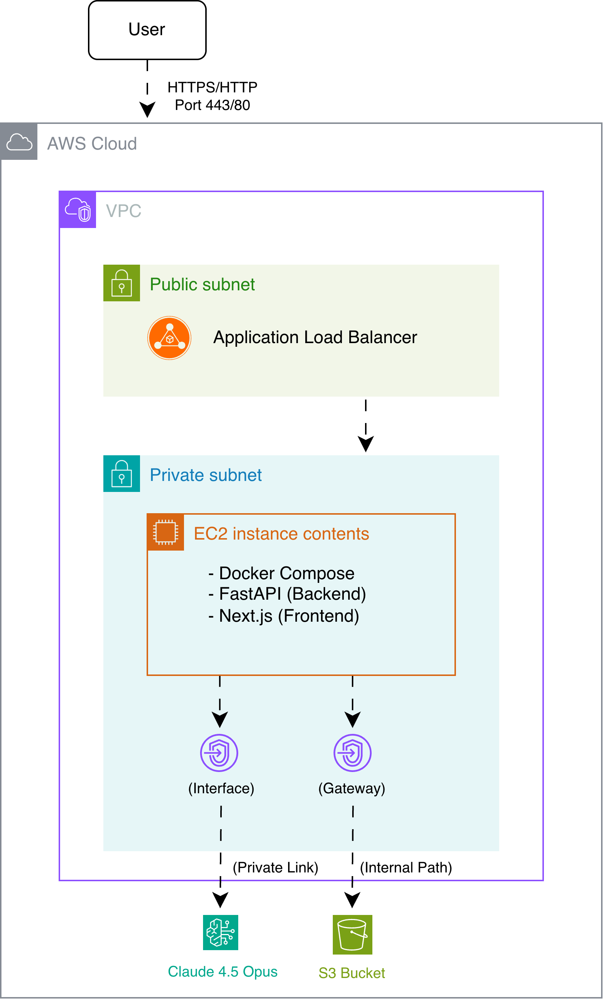

About Me
단순한 기능 구현을 넘어, 인프라의 안정성과 보안을 최우선으로 생각합니다. 폐쇄망 환경에서 발생하는 예기치 못한 장애를 JVM Heap Dump 및 GC 로그 분석을 통해 근본 원인을 파악하고 해결한 경험이 있습니다.
반복되는 운영 업무와 환경 의존성 문제를 PowerShell 스크립트와 CI/CD 파이프라인으로 자동화하여 팀의 생산성을 높이는 데 집중합니다. 기술적 근거를 바탕으로 시스템의 빈틈을 메워나가는 DevOps 엔지니어로 성장하고 있습니다.
✓ 배치 시스템 장애 발생률 0% 달성 (JVM 최적화)
✓ 인프라 리드 타임 75% 단축 (Stateless 설계)
Technical Skills
Cloud & DevOps
Observability & Data
Backend & AI
Work Experience: 도슨티 (Docenty.ai)
2025.09 - 2026.03 | Engineering Product Dev
보안 강화형 AWS LLM 에이전트 인프라 구축
운영 안정성 & 보안외부 인터넷이 차단된 폐쇄망 환경에서 Amazon Bedrock(Claude)을 안전하게 활용하고, 에이전트의 실행 상태를 영구적으로 관리할 수 있는 Stateless 클라우드 인프라를 구축했습니다.
핵심 구현 내용
- 보안 통신 최적화: VPC Endpoint(PrivateLink)를 연동하여 인터넷 노출 없이 AWS 백본망을 통한 안전한 API 호출 구현
- Stateless 아키텍처: 기존 모놀리식 구조를 FastAPI + Next.js로 분리하고, ALB를 연동하여 세션 유지 및 확장성 확보
- 중앙 집중형 로그 관리: 에이전트의 모든 수행 결과와 실행 로그를 Amazon S3에 자동 적재하여 데이터 내구성 확보
- 최소 권한 원칙 적용: IAM Role 및 Endpoint Policy 설계를 통해 자원 접근 권한을 엄격히 제한하여 보안 감사 요건 충족

* VPC Endpoint를 활용한 폐쇄망 보안 아키텍처
Skills Used
MCP 기반 API 연동 서버 구축 및 배포 자동화(CI/CD)
배포 자동화 & DX 개선사용자 환경마다 다른 Python 런타임 의존성 문제를 해결하고, 비개발자도 자연어로 Open API를 호출할 수 있도록 단일 바이너리 패키징 및 자동 빌드 파이프라인을 구축했습니다.
Challenge (Problem)
- 런타임 의존성 파편화로 인한 사용자 환경별 실행 오류 빈번
- API 활용을 위한 수동 환경 설정 및 코드 작성 진입 장벽
- 수동 빌드 및 배포 프로세스로 인한 버전 관리의 어려움
Solution (DevOps)
- PyInstaller 기반 Standalone 바이너리 패키징으로 의존성 제거
- GitHub Actions CI 파이프라인으로 빌드 및 릴리스 자동화
- 사용자 설정 편의를 위한 대시보드 기반 자동 구성 UI 도입
핵심 구현 내용
- 독립 실행형 패키징: Python 미설치 환경에서도 동작하는 단일 실행 파일(.exe) 구조 설계로 환경 이슈 관련 기술 지원 요청 90% 절감
- CI/CD 자동화: 코드 Tag push 시 자동으로 바이너리를 빌드하고 GitHub Releases에 버전별 아티팩트를 업로드하는 파이프라인 구축
- 인터페이스 추상화: 복잡한 API 규격을 LLM이 이해할 수 있는 MCP(Model Context Protocol) 기반 Tool 형태로 추상화
- 보안 실행 환경: LLM 생성 코드의 오동작 방지를 위한 내부 샌드박스 격리 및 API 호출 권한 제어
Skills Used
Troubleshooting & Optimization
1. JNI 호출에 따른 GCLocker 활성화 및 GC 불가 상태 해결
Critical Path⚠️ AS-IS (Problem)
대규모 배치 작업 중 실메모리 사용량이 임계치 미만임에도 불구하고 간헐적 OutOfMemoryError(OOM) 발생 및 프로세스 중단 현상 반복.
🔍 Analysis (Approach)
- - Heap Dump 분석: 실제 힙 점유율은 낮으나 GC가 수행되지 않는 모순 확인
- - GC Log 정밀 분석: UNION ALL 기반 대규모 INSERT 실행 시 JNI 호출 발생 확인
- - 원인 특정: JNI Critical Section 진입으로 인한 GCLocker 활성화가 GC를 차단하고 있음을 규명
✅ TO-BE (Solution)
- - 전략 수정: UNION ALL 방식 대신 파티셔닝된 Batch Insert 도입으로 JNI 점유 시간 단축
- - 리소스 최적화: DB 드라이버 설정 및 쿼리 튜닝으로 Critical Section 체류 최소화
- - 자가 치유(Self-Healing): OOM 감지 시 자동 Heap Dump 채득 및 프로세스 재시작을 수행하는 PowerShell 스크립트 구축
Result: 근본 원인 해결을 통한 장애 발생 건수 0건 달성
2. 배치 스케줄러 스레드 폭증 및 리소스 경합 최적화
Optimization⚠️ AS-IS
작업당 무분별한 스레드 생성으로 인한 스레드 수 10,000개 폭증 및 Context Switching 부하로 시스템 다운.
✅ TO-BE
- - ThreadPoolExecutor: 공통 풀 구현으로 최대 스레드 가동량 및 생성 주기 제어
- - Back-pressure 조절: LinkedBlockingQueue 도입으로 대기 작업량 관리 및 시스템 과부하 방지
- - 객체 재사용: SimpleJdbcInsert 객체 캐싱을 통해 무분별한 객체 생성 방지 및 GC 부하 완화
Result: 리소스 관리 최적화로 안정적인 대용량 데이터 처리 보장
Education
세종대학교
데이터사이언스학과 졸업 (2024.03 - 2026.02)
학점: 4.1/4.5
한국산업기술대학교(KPU)
컴퓨터공학부 중퇴 (2019.03 - 2023.08)
Awards & Blog
- 우수상 제4회 세종 U&I 페스티벌 캡스톤 디자인 경진대회
- 대상 2025 제19회 세종대학교 창의설계경진대회
- 1등 2024 인공지능데이터사이언스 융합학술제
- 기술 블로그: 논문 리뷰 및 실습 코드 정리